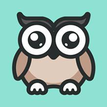

<!DOCTYPE html>
<html lang="en">
<head>
    <meta charset="UTF-8">
    <title>lagou</title>
    <style>
        html, body, div, img {
            margin: 0;
            padding: 0;
        }

        .wrap {
            width: 120px;
            height: 120px;
            position: absolute;
            background: darkcyan;
        }

        .wrap img {
            width: 100%;
            height: 100%;
            border: none;
            vertical-align: top;
        }


    </style>
</head>
<body>
<div id="wrap" class="wrap">
    <!---->
</div>

</body>
</html>
<script src="../event2.js"></script>
<script>
    /*
    *     dom.setCapture() 只有在ie  在鼠标和元素之间添加了一个链接
    *     dom.releaseCapture()  释放这个链接
    * */
    var wrap = document.getElementById('wrap');
    on(wrap,'mousedown',function (e){
        // l和t就鼠标相对于盒子的坐标
        // 这个l和t由于在mousemove的时候也需要用，所以保存在自定义属性上
        this.l = e.pageX - wrap.offsetLeft;
        this.t = e.pageY - wrap.offsetTop;
        if(wrap.setCapture){  // ie
            wrap.setCapture();
            on(wrap,'mousemove',move);
            on(wrap,'mouseup',up);
        }else{ // chrome
            on(document,'mousemove',move);
            on(document,'mouseup',up);
        }
    });

    function move(e){
        var l = e.pageX - /*this*/wrap.l; // this.l是在鼠标按下的时刻获取的
        var t = e.pageY - /*this*/wrap.t;
        // 范围 自己补上
        wrap.style.left = l + 'px';
        wrap.style.top = t + 'px';
        e.preventDefault(); // 阻止图片拖拽的默认行为
    }

    function up(e){
        if(wrap.releaseCapture){ // ie
            off(wrap,'mousemove',move);
            off(wrap,'mouseup',up);
        }else{ // chrome
            off(document,'mousemove',move);
            off(document,'mouseup',up);
        }
    }

    // new Drag(box1);
    // new Drag(box2);


</script>
